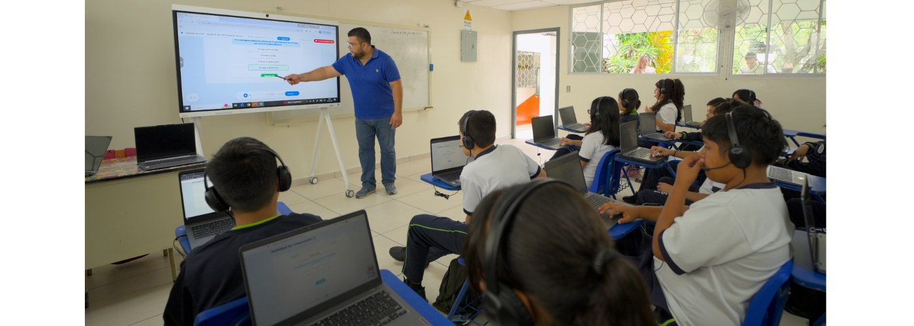

El Salvador: todo el sistema alineado para que los estudiantes aprendan
Desde 2024, El Salvador moderniza su educación pública con un objetivo: mejorar los aprendizajes en matemática y lectura. Currículo, materiales, apoyo docente, evaluación y tecnología avanzan juntos, y la inteligencia artificial acelera ese trabajo sin reemplazar al docente.

De 10 escuelas a todo el país, paso a paso.
La modernización se diseñó como un proceso gradual: probar el enfoque, aprender de la implementación y ajustar con evidencia antes de crecer.
- Piloto en 10 escuelas para poner a prueba el enfoque.
- Cerca de 200 escuelas desde mediados de 2025.
- Cerca de 1.000 escuelas un año después.
- Meta: los casi 5.000 centros educativos públicos del país.
PISA for Schools, julio de 2026.
1.198 estudiantes voluntarios de 171 escuelas, con cerca de un año en el programa, rindieron la evaluación de la OCDE. Sus puntajes, frente al promedio nacional:
Según la OCDE, estos resultados son similares al promedio de Suecia o Alemania. No representan al programa ni al país, porque los estudiantes participaron de forma voluntaria, pero la magnitud de la diferencia merece atención.
Un sistema, no piezas sueltas.
Muchas reformas fracasan porque sus partes avanzan por separado: se reparte tecnología sin acompañamiento, o se evalúa sin usar la información. En las escuelas del programa, cada pieza refuerza a las demás.
- Currículo enfocado en matemática y lectura, con lo esencial que cada estudiante debe aprender por grado.
- Planificación y guiones de clase basados en la ciencia del aprendizaje.
- Tutorías y acompañamiento presencial y virtual para los docentes.
- Evaluación permanente que alimenta tableros en tiempo real y activa apoyo para quienes se quedan atrás.
- Capacidad de gestión para implementar con fidelidad en cientos de escuelas.
La IA acelera lo que el sistema ya sabe hacer.
Casi todo lo anterior podría hacerse sin tecnología. La diferencia es que con IA se hace más rápido, de forma más sistemática y con más capacidad de aprender y corregir.
Amplía al docente, no lo reemplaza
La tecnología permite al maestro dedicar más tiempo a lo que requiere su criterio. Las plataformas ajustan la práctica al nivel de cada estudiante, siguen la asistencia y el progreso, y detectan temprano a quien necesita refuerzo.
Modelos pequeños y grandes, según la tarea
El programa busca la mejor combinación entre modelos de lenguaje pequeños y grandes para cada tarea: evaluaciones, asesoramiento y observación de clases. Las herramientas se afinan según el uso que les dan docentes y escuelas.
Una señal alentadora, con camino por recorrer.
En PISA 2025, El Salvador mostró una mejora moderada: fue uno de los 12 países del mundo que subieron sus puntajes desde 2022 y, junto con Costa Rica, el único de América Latina que avanzó en matemática, lectura y ciencias. Y aunque la matrícula creció, los puntajes nacionales no cayeron. Los resultados del programa todavía no representan a todo el sistema.
Financiamiento por resultados
La expansión cuenta con asistencia técnica y un Programa por Resultados del Banco Mundial: el país no recibe fondos por comprar insumos, sino a medida que logra resultados.
Más del 8 % del PIB en educación
En agosto de 2026, el gobierno anunció que elevará la inversión en educación por encima del 8 % del PIB a partir de 2027, un compromiso casi sin precedentes en la región.
Lee la historia completa.
Una señal alentadora desde El Salvador
Susana Cordeiro Guerra y Jaime Saavedra (10 de septiembre de 2026). Un sistema alineado y tecnología al servicio de los aprendizajes pueden acelerar los cambios.
Leer el blogAn encouraging sign from El Salvador
La versión en inglés del mismo blog.
Read the blog